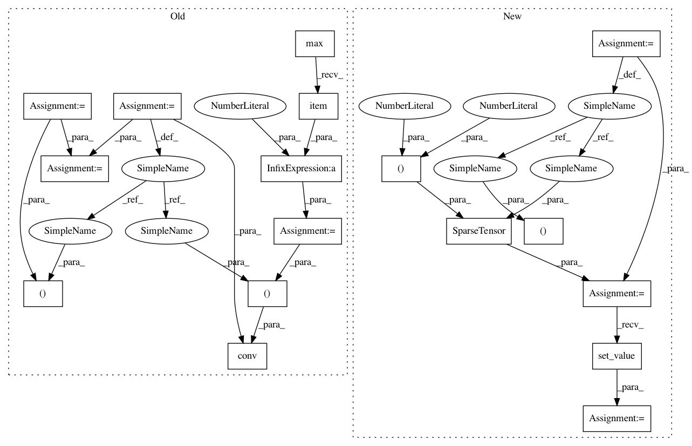

14534a49d97c0f6cc815b9a7336dc0f8497131c1,test/nn/conv/test_tag_conv.py,,test_tag_conv,#,5
Before Change
def test_tag_conv():
in_channels, out_channels = (16, 32)
edge_index = torch.tensor([[0, 0, 0, 1, 2, 3], [1, 2, 3, 0, 0, 0]])
edge_weight = torch.rand(edge_index.size(1))
num_nodes = edge_index.max().item() + 1
x = torch.randn((num_nodes, in_channels))
conv = TAGConv(in_channels, out_channels)
assert conv.__repr__() == "TAGConv(16, 32, K=3)"
out1 = conv(x, edge_index)
assert out1.size() == (num_nodes, out_channels)
out2 = conv(x, edge_index, edge_weight)
assert out2.size() == (num_nodes, out_channels)
jit = torch.jit.script(conv.jittable())
assert jit(x, edge_index).tolist() == out1.tolist()
assert jit(x, edge_index, edge_weight).tolist() == out2.tolist()
conv = TAGConv(in_channels, out_channels, normalize=False)
out = conv(x, edge_index, edge_weight)
assert out.size() == (num_nodes, out_channels)
jit = torch.jit.script(conv.jittable())
assert jit(x, edge_index, edge_weight).tolist() == out.tolist()
After Change
def test_tag_conv():
x = torch.randn(4, 16)
edge_index = torch.tensor([[0, 0, 0, 1, 2, 3], [1, 2, 3, 0, 0, 0]])
row, col = edge_index
value = torch.rand(row.size(0))
adj2 = SparseTensor(row=row, col=col, value=value, sparse_sizes=(4, 4))
adj1 = adj2.set_value(None)
conv = TAGConv(16, 32)
assert conv.__repr__() == "TAGConv(16, 32, K=3)"
out1 = conv(x, edge_index)
In pattern: SUPERPATTERN
Frequency: 3
Non-data size: 17
Instances
Project Name: rusty1s/pytorch_geometric
Commit Name: 14534a49d97c0f6cc815b9a7336dc0f8497131c1
Time: 2020-06-16
Author: matthias.fey@tu-dortmund.de
File Name: test/nn/conv/test_tag_conv.py
Class Name:
Method Name: test_tag_conv
Project Name: rusty1s/pytorch_geometric
Commit Name: 72e8ef33d6a6239b71dbd1b24edccf1e5d03d9a1
Time: 2020-06-15
Author: matthias.fey@tu-dortmund.de
File Name: test/nn/conv/test_gcn_conv.py
Class Name:
Method Name: test_gcn_conv
Project Name: rusty1s/pytorch_geometric
Commit Name: a8ad5f0067eee2ec1dfd353d8c97f7c926b05dad
Time: 2020-06-30
Author: matthias.fey@tu-dortmund.de
File Name: test/nn/conv/test_sg_conv.py
Class Name:
Method Name: test_sg_conv
Project Name: rusty1s/pytorch_geometric
Commit Name: 14534a49d97c0f6cc815b9a7336dc0f8497131c1
Time: 2020-06-16
Author: matthias.fey@tu-dortmund.de
File Name: test/nn/conv/test_tag_conv.py
Class Name:
Method Name: test_tag_conv